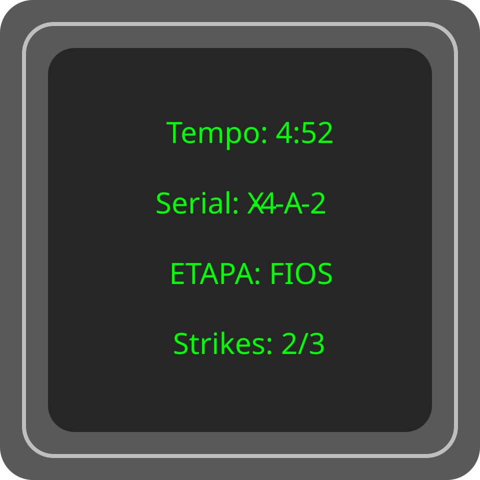
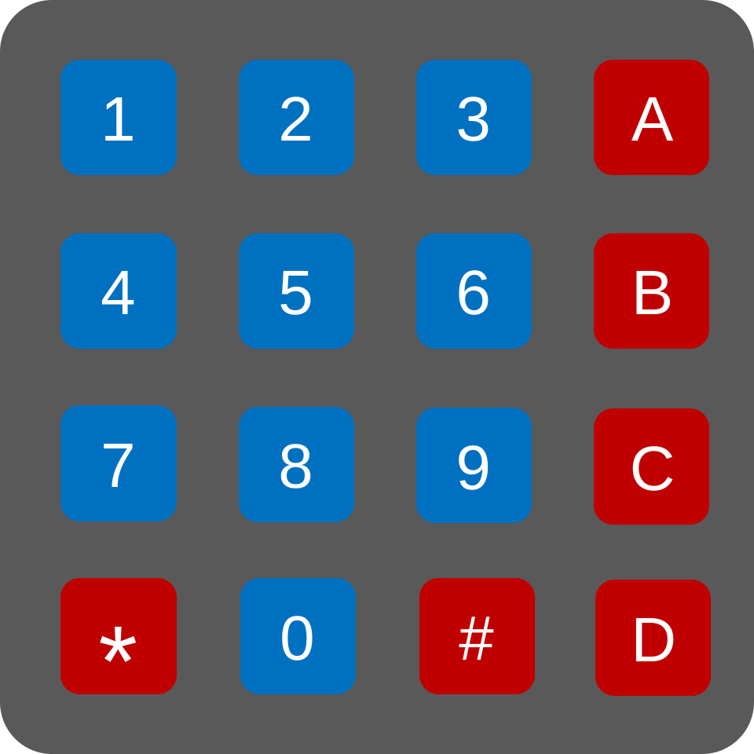
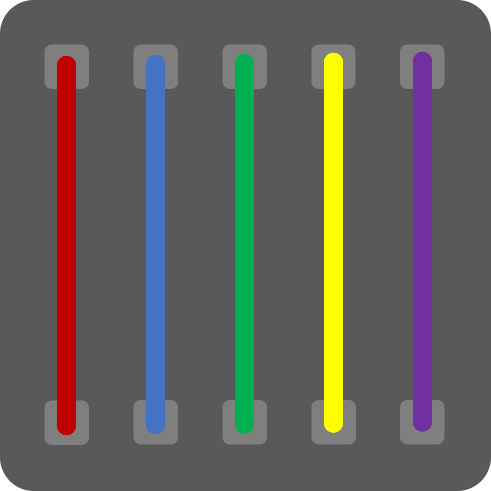
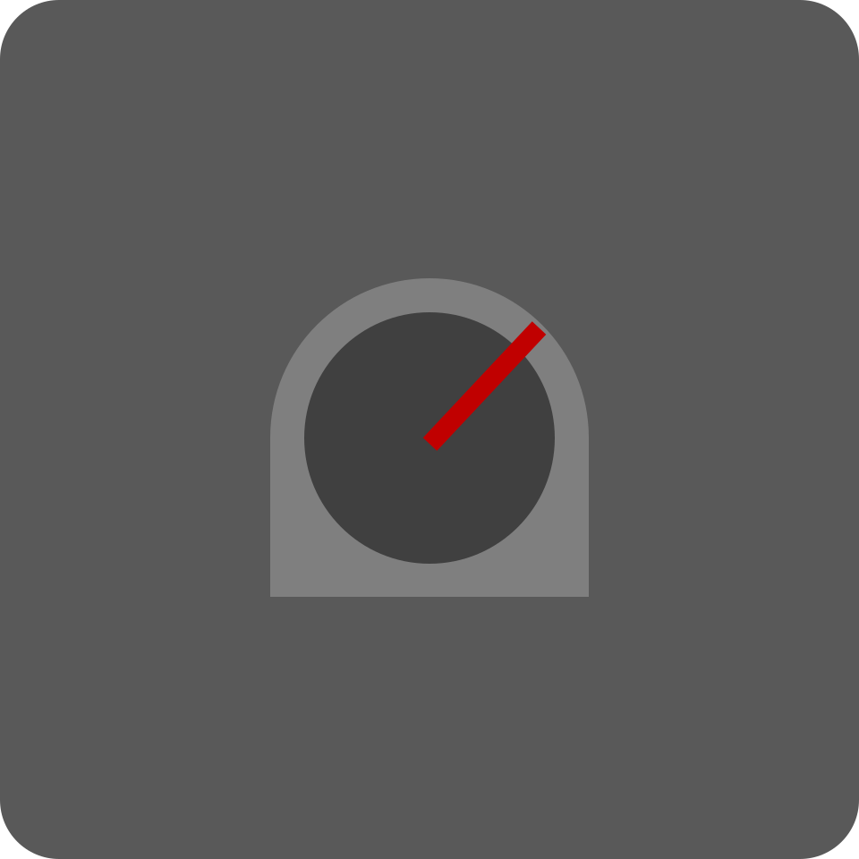
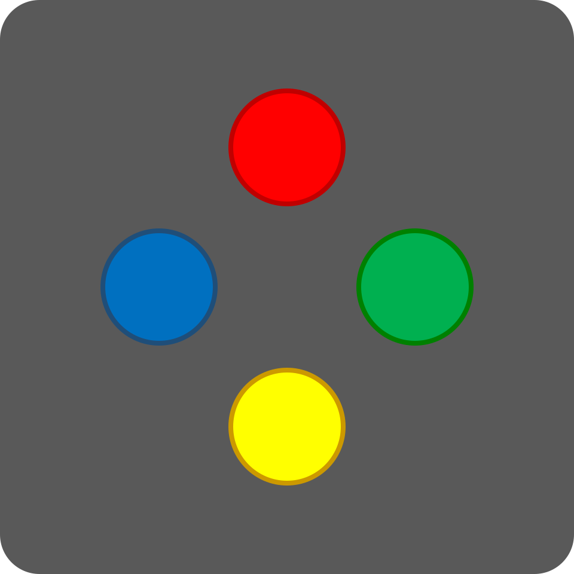
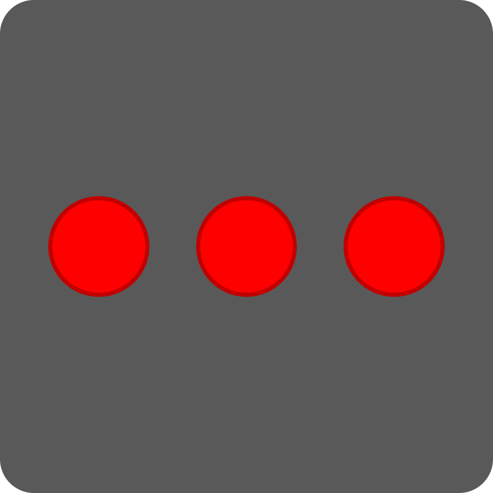
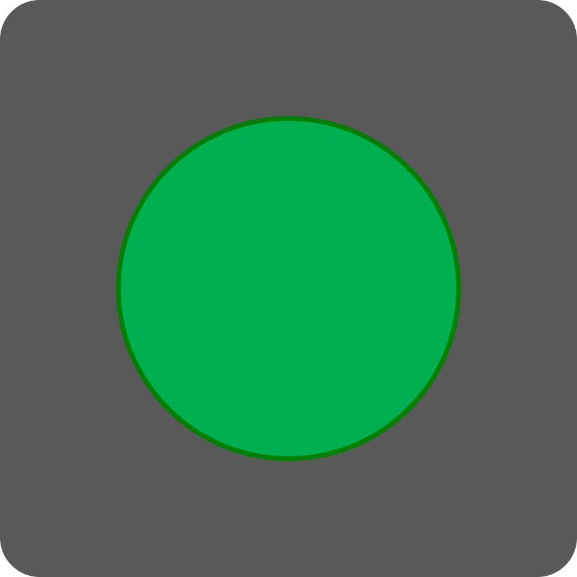
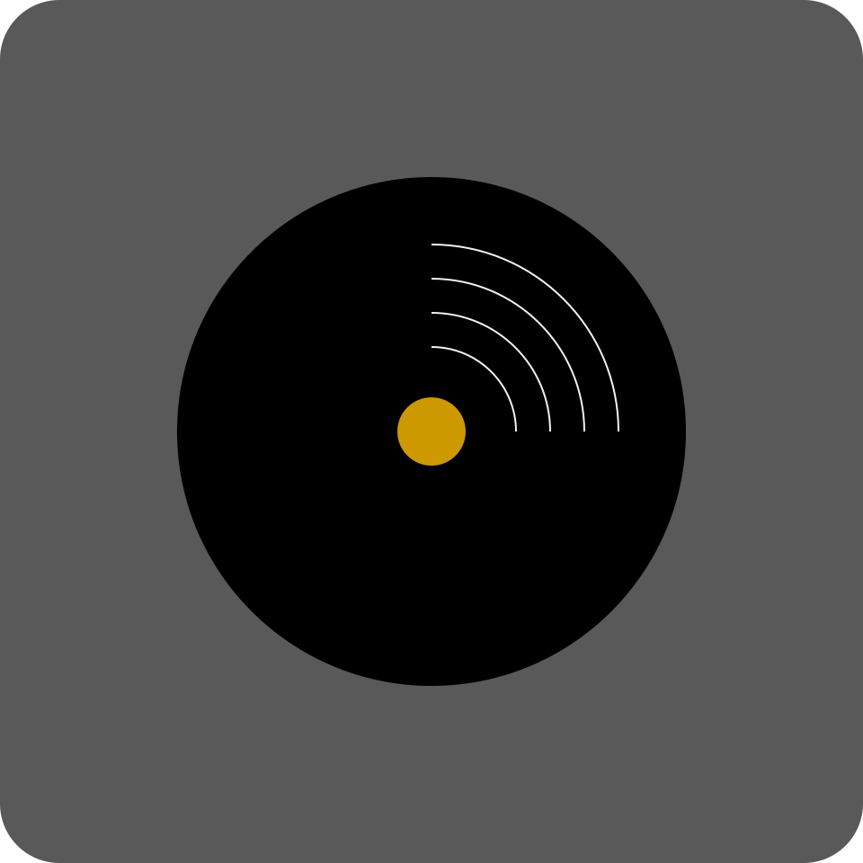

São 10 peças. Cada uma tem um ícone para você não se perder:

Mostra o tempo, o código secreto e em qual etapa você está

Para digitar a senha de 6 números

Só um fio é o certo. Corte o errado e leva um strike
Cada chave fica ligada ou desligada. São 16 combinações

Gire até encontrar o som certo da bomba
Aperte e solte na hora certa

Repita a sequência de cores que pisca

Acendem vermelho toda vez que você erra algo

Acende verde quando você desarma a bomba

Faz barulho para avisar se você está perto ou errou
Na tela da bomba aparece um código secreto de 4 caracteres (exemplo: K9#m). Cada caractere serve para uma etapa diferente. Anote os 4 caracteres antes de começar.
| Posição | Nome neste guia | Serve para |
|---|---|---|
| 1º caractere | Primeiro caractere | 1º dígito da senha · chave base · frequência base |
| 2º caractere | Segundo caractere | 4º dígito da senha · semente do Simon |
| 3º caractere | Terceiro caractere | 3º e 5º dígitos da senha · frequência extra |
| 4º caractere | Quarto caractere | Qual fio cortar · 6º dígito da senha (via Simon) · chave extra |
Olhe o quarto caractere do código secreto na tela. Corte apenas o fio indicado abaixo:
| Quarto caractere é… | Corte o fio |
|---|---|
| Número par (0, 2, 4, 6, 8) | Vermelho (fio 1) |
| Número ímpar (1, 3, 5, 7, 9) | Azul (fio 2) |
| Letra maiúscula (A até Z) | Verde (fio 3) |
| Letra minúscula (a até z) | Amarelo (fio 4) |
| Símbolo (! @ # $ % e outros) | Laranja (fio 5) |
Lembrete: a cor do fio que você cortou define o 2º número da sua senha na Etapa 2:
| Fio cortado | 2º número da senha |
|---|---|
| Vermelho | 3 |
| Azul | 8 |
| Verde | 2 |
| Amarelo | 7 |
| Laranja | 4 |
Use o teclado numérico para digitar os 6 dígitos. Tecla * apaga o último, tecla # confirma.
Cada número da senha vem de um lugar diferente. O 6º dígito fica em branco temporariamente — ele é definido só depois da Etapa 3 (Simon).
| Posição da senha | Como descobrir o número |
|---|---|
| 1º número | Pegue o primeiro caractere do código secreto. Faça: (valor % 9) + 1. O resultado fica entre 1 e 9. |
| 2º número | Depende do fio que você cortou na Etapa 1: Vermelho=3, Azul=8, Verde=2, Amarelo=7, Laranja=4 |
| 3º número | Pegue o terceiro caractere do código secreto. Faça: (valor % 9) + 1. Resultado entre 1 e 9. |
| 4º número | Pegue o segundo caractere do código secreto + número de strikes atuais. Faça: ((valor + strikes×17) % 10). Resultado entre 0 e 9. |
| 5º número | Pegue o terceiro caractere do código secreto. Se o valor for par → número é 5. Se for ímpar → número é 3. |
| 6º número | Definido depois da Etapa 3 (Simon). Se você acertou o Simon → número é 1. Se errou → número é 0. |
Atenção: o 2º número depende da Etapa 1, o 4º depende dos seus erros atuais (strikes), e o 6º depende da Etapa 3. Não pule etapas!
Quatro luzes piscam em uma ordem com sons diferentes. Você precisa repetir a mesma ordem usando as teclas:
Vermelho
Verde
Amarelo
Azul
Como jogar: a bomba mostra uma sequência (ex: Vermelho → Verde → Azul). Você aperta as teclas na mesma ordem. A cada acerto, a sequência fica maior. Você precisa acertar 5 cores seguidas.
Lembrete: se você acertar tudo, o 6º número da senha é 1. Se errar, é 0.
Gire o potenciômetro até o som da bomba ficar "estável" (o apito fica no tom certo). A tela dá uma dica vaga, mas você pode calcular o som exato:
| Código secreto | Som alvo aproximado |
|---|---|
K9#m | 620 Hz |
7@B2 | 810 Hz |
xZ$5 | 480 Hz |
Quanto mais perto você estiver do som certo, mais rápido e agudo o buzzer apita. Quando estabilizar, você passou de fase.
Existem 4 chaves (toggle). Cada uma pode ficar ligada ou desligada. Isso dá 16 combinações possíveis (de 0000 a 1111). Descubra a certa passo a passo:
Exemplo rápido: se o 1º caractere é K (valor 75), os 4 bits finais são 1011. Se não cortou o fio Azul, não tem strikes e o 4º caractere é primo, você inverte bits 1 e 3, resultando em 0001 (chaves: Desligado, Desligado, Desligado, Ligado).
Aperte o botão grande e segure. Solte exatamente quando o timer mostrar o 4º número da sua senha (aquele que você descobriu na Etapa 2).